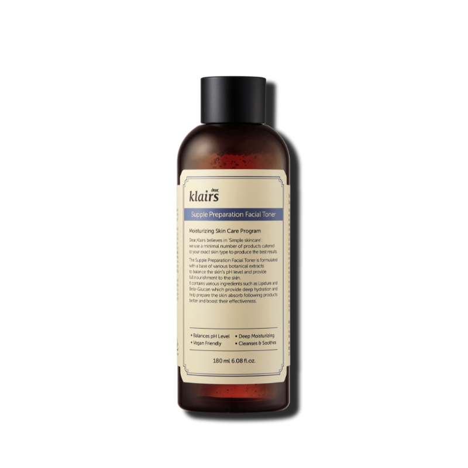

Toner Facial
Es 100% vegano, está formulado con extractos vegetales y su función principal es la de equilibrar el pH de la piel y así prepararla para los siguientes pasos de la rutina de belleza. Ayuda también a mejorar la piel y a hacerla menos propensa a irritaciones y a que los poros no se obstruyan, previniendo problemas cutáneos como la aparición de espinillas o puntos negros.
- Tipo de piel: Piel grasa
- Beneficios: Es uno de los tónicos mejor valorados en MiiN Cosmetics. ¡Fíjate en sus reviews!
- Tamaño: 180 ml
- Ingredientes clave: Aqua (Water), Butylene Glycol, Betaine, Caprylic/Capric Triglyceride, Dimethyl Sulfone, Disodium EDTA, Glycyrrhiza Glabra Root Extract, Centella Asiatica Extract.
$38.900